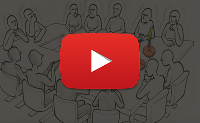

Debemos entonces partir del concepto de “política”, que la Real Academia Española de la Lengua ha definido como el “arte, doctrina u opinión referente al gobierno de los Estados” o como la “actividad de quienes rigen o aspiran a regir los asuntos públicos, o también como la “actividad del ciudadano cuando interviene en los asuntos públicos con su opinión, con su voto, o de cualquier otro modo”.
En todo caso, la política no es una teoría o un discurso, sino se trata de la “vida, actividad y acción” (Maldonado, 2007, p. 103), es decir, el “escenario donde es posible la convivencia entre seres diversos” (Vela, 2007, p. 11).
Diferentes acepciones o definiciones contenidas en el diccionario de la Lengua Española, disponible en: http://dle.rae.es/?id=Ta2HMYR.
Conjunto de actividades, interacciones, comportamientos, acciones y actitudes que se dan al interior de una sociedad en forma individual o colectiva por parte de individuos, grupos, partidos e instituciones, las cuales van dirigidas a explicar, demandar, influir o tomar parte en el proceso de decisiones políticas. (Fernández, 1999, p. 2).
Otro concepto muy relacionado con la participación política es el de la participación ciudadana, que se define por la propia Constitución Política de 1991 como un sistema que permite vigilar la gestión pública y los resultados de dicha gestión (Const., 1991, art. 270), participación que fue expresamente regulada por la Ley 134 de 1994, señalando como mecanismos o formas de participación ciudadana, los siguientes:
Algunas de las acciones que hacen parte de la participación política y ciudadana, se sintetizan en la siguiente figura:
Fuente: Elaboración propia a partir de información de la Oficina del Alto Comisionado para la Paz (2014).
Observe el video “Fortalecimiento de la participación política”
Responda las siguientes preguntas:
Envíe sus respuestas a la plataforma
Aun cuando los contenidos de la tabla 2 son relevantes para el adecuado entendimiento del tema de la participación política, explicaremos de forma breve, el alcance de algunos de sus contenidos, entre otras razones por ser estos temas los que ya tienen algún desarrollo legal o reglamentario. Veamos la información de los recuadros haciendo clic sobre ellos: